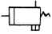
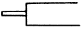
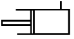
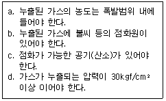

지게차운전기능사 (2008-02-03 기출문제)
1. 윤활유의 점도가 너무 높은 것을 사용했을 때의 설명으로 맞는 것은?
- 좁은 공간에 잘 침투하므로 충분한 주유가 된다.
- 엔진 시동을 할 때 필요 이상의 동력이 소모 된다.
- 점차 묽어지기 때문에 경제적이다.
- 겨울철에 특히 사용하기 좋다.
(정답률: 78%)

2. 오일의 여과방식이 아닌 것은?
- 자력식
- 분류식
- 전류식
- 샨트식
(정답률: 55%)
3. 디젤기관에서 타이머의 역할로 가장 적합한 것은?
- 분사량 조절
- 자동변속 단(저속~고속)조절
- 연료 분사시기 조절
- 기관속도 조절
(정답률: 77%)
4. 기관에서 냉각계통으로 배기가스가 누설되는 원인에 해당되는 것은?
- 실린더 헤드 가스켓 불량
- 매니폴더의 가스켓 불량
- 워터펌프의 불량
- 냉각팬의 벨트 유격 과대
(정답률: 63%)
5. 디젤기관에서 사용되는 공기청정기에 관한 설명으로 틀린 것은?
- 공기청정기는 실린더 마멸과 관계없다.
- 공기청정기가 막히면 배기색은 흑색이 된다.
- 공기청정기가 막히면 출력이 감소한다.
- 공기청정기가 막히면 연소가 나빠진다.
(정답률: 75%)
6. 부동액이 구비하여야 할 조건이 아닌 것은?
- 물과 쉽게 혼합될 것
- 침전물의 발생이 없을 것
- 부식성이 없을 것
- 비등점이 물보다 낮을 것
(정답률: 62%)
7. 피스톤과 실린더 간격이 클 때 일어나는 현상으로 맞는 것은?
- 기관의 회전속도가 빨라진다.
- 블로우바이 가스가 생긴다.
- 기관의 출력이 증가한다.
- 엔진이 과열한다.
(정답률: 54%)
8. 디젤기관에서 부조 발생의 원인이 아닌 것은?
- 발전기고장
- 거버너 작용 불량
- 분사시기 조정불량
- 연료의 압송불량
(정답률: 61%)
9. 연료탱크의 연료를 분사펌프 저압부까지 공급하는 것은?
- 연료공급 펌프
- 연료분사 펌프
- 인젝션 펌프
- 로터리 펌프
(정답률: 64%)
10. 디젤기관의 시동을 용이하게 하기 위한 방법이 아닌 것은?
- 압축비를 높인다.
- 흡기온도를 상승시킨다.
- 겨울철에 예열장치를 사용한다.
- 시동시 회전속도를 낮춘다.
(정답률: 73%)
11. 6기통 기관이 4기통 기관보다 좋은 점이 아닌 것은?
- 가속이 원활하고 신속하다.
- 저속회전이 용이하고 출력이 높다.
- 기관 진동이 적다.
- 구조가 간단하여 제작비가 싸다.
(정답률: 82%)
12. 연료 취급에 관한 설명으로 가장 거리가 먼 것은?
- 연료 주입은 운전 중에 하는 것이 효과적이다.
- 연료 주입시 물이나 먼지 등의 불순물이 혼합되지 않도록 주의한다.
- 정기적으로 드레인콕을 열어 연료 탱크 내의 수분을 제거한다.
- 연료를 취급할 때에는 화기에 주의한다.
(정답률: 87%)
13. 기관을 시동하기 위해 시동키를 작동했지만 기동모터가 회전하지 않아 점검하려고 한다. 점검 내용으로 틀린 것은?
- 배터리 방전상태 확인
- 인젝션 펌프 솔레노이드 점검
- 배터리 터미널 접촉 상태 확인
- ST 회로 연결 상태 확인
(정답률: 63%)
14. 교류발전기의 특징으로 틀린 것은?
- 속도변화에 따른 적용 범위가 넓고 소형, 경량이다.
- 저속시에도 충전이 가능하다.
- 정류자를 사용한다.
- 다이오드를 사용하기 때문에 정류 특성이 좋다.
(정답률: 46%)
15. 건설기계 차량에서 가장 큰 전류가 흐르는 것은?
- 콘덴서
- 발전기로터
- 배전기
- 시동모터
(정답률: 51%)
16. MF배터리가 아닌 일반 납산축전지를 보관 관리할 경우 며칠마다 정기적으로 충전하는 것이 좋은가?
- 15일
- 30일
- 45일
- 60일
(정답률: 52%)
17. 방향지시등의 한쪽 등 점멸이 빠르게 작동하고 있을 때, 운전자가 가장 먼저 점검하여야 할 곳은?
- 전구
- 플래셔 유닛
- 콤비네이션 스위치
- 배터리
(정답률: 70%)
18. 12V용 납산축전지의 방전종지 전압은?
- 12V
- 10.5V
- 7.5V
- 1.75V
(정답률: 47%)
19. 토크컨버터의 구성품이 아닌 것은?
- 펌프
- 터빈
- 스테이터
- 플라이휠
(정답률: 63%)
20. 유압식 조향장치의 핸들의 조작이 무거운 원인과 가장 거리가 먼 것은?
- 유압이 낮다.
- 오일이 부족하다.
- 유압계통 내에 공기가 혼입되었다.
- 펌프의 회전이 빠르다.
(정답률: 68%)
21. 기계식 변속기가 설치된 건설기계에서 클러치판의 비틀림 코일스프링의 역할은?
- 클러치판이 더욱 세게 부착되게 한다.
- 클러치 작동시 충격을 흡수한다.
- 클러치의 회전력을 증가시킨다.
- 클러치 압력판의 마멸을 방지한다.
(정답률: 70%)
22. 지게차의 유압탱크 유량을 점검하기 전 포크의 적절한 위치는?
- 포크를 지면에 내려놓고 점검한다.
- 최대적재량의 하중으로 포크는 지상에서 떨어진 높이에서 점검한다.
- 포크를 최대로 높여 점검한다.
- 포크를 중간 높이에서 점검한다.
(정답률: 79%)
23. 모토그레이더의 조향장치에서 스너버바(Snubber bar)의 역할은?
- 조향조작시 핸들을 가볍게 한다.
- 조향기어비를 증대 시킨다.
- 조향력을 증대 시킨다.
- 전륜의 충격이 핸들에 전달되는 것을 방지한다.
(정답률: 52%)
24. 무한 궤도식 장비에서 트랙장력으로 조정하는 기능을 가진 것은?
- 트랙 어저스터
- 스프로킷
- 주행모터
- 아이들러
(정답률: 41%)
25. 유압식 굴삭기에서 센터 조인트의 기능은?
- 스티어링 링키지의 하나로 차체의 중앙 고정축 주위에 움직이는 암이다.
- 상부 회전체의 오일을 하부 주행모터에 공급한다.
- 전. 후륜의 중앙에 있는 디퍼렌셜를 가르키는 것이다.
- 물체가 원운동을 하고 있을 때 그 물체에 작용하는 원심력으로서 원의중심에서 멀어지는 기능을 하는 것 이다.
(정답률: 30%)
26. 불도저의 배토판 상승이 늦는 원인이 아닌 것은?
- 릴리프 밸브의 조정이 불량할 때
- 유압 작동 실린더의 내부누출이 있을 때
- 펌프가 불량할 때
- 작동 유압이 너무 높을 때
(정답률: 62%)
27. 다음 중 건설기계의 범위에 속하지 않는 것은?
- 노상 안정 장치를 가진 자주식인 노상안정기
- 정지장치를 갖고 자주식인 모터그레이더
- 공기토출량이 매분당 2.83세제곱미터 이상의 공기 압축기(매제곱 센티미터당 7킬로그램 기준)
- 펌프식, 포크식, 디퍼식 또는 그래브식으로 자항식인 준설선
(정답률: 45%)
28. 편도 4차로 일반도로에서 4차로가 버스 전용차로일 때 건설기계는 어느 차로로 통행하여야 하는가?
- 2차로
- 3차로
- 4차로
- 한가한 차로
(정답률: 61%)
29. 다음 그림과 같은 교통표지의 설명으로 맞는 것은?
- 좌로 일방통행 표지이다.
- 우로 일반통행 표지이다.
- 일단 정지 표지이다.
- 진입 금지 표지이다.
(정답률: 67%)
30. 건설기계 매매업의 등록을 하고자 하는 자의 구비서류로 맞는 것은?
- 건설기계 매매업 등록필증
- 건설기계보험증서
- 건설기계등록증
- 하자보증금예치증서 또는 보증보험증서
(정답률: 37%)
31. 교차로의 가장자리 또는 도로의 모퉁이로부터 관련법상 몇 m 이내의 장소에 정차 및 주차를 해서는 안 되는가?
- 4m
- 5m
- 6m
- 10m
(정답률: 68%)
32. 교통사고를 야기한 도주차량 신고로 인한 벌점상계에 대한 특혜점수는?
- 40점
- 특혜점수 없음
- 30점
- 120점
(정답률: 51%)
33. 정기 검사대상 건설기계의 정기검사 신청기간으로 맞는 것은?
- 건설기계의 정기검사 유효기간 만료일 전 16일 이내에 신청한다.
- 건설기계의 정기검사 유효기간 만료일 전5일 이내에 신청한다.
- 건설기계의 정기검사 유효기간 만료일 전 15일 이내에 신청한다.
- 건설기계의 정기검사 유효기간 만료일 전후 30일 이내에 신청한다.
(정답률: 56%)
34. 건설기계 조종사의 면허취소 사유가 아닌 것은?
- 부정한 방법으로 건설기계의 면허를 받은 때
- 면허정지처분을 받은 자가 그 정지 기간 중 건설기계를 조종한 때
- 건설기계의 조종 중 고의로 인명 피해를 일으킨 때
- 도로주행 중 적재한 화물이 추락하여 사람이 부상한 사고
(정답률: 80%)
35. 도로교통법상 교통사고에 해당되지 않는 것은?
- 도로운전 중 언덕길에서 추락하여 부상한 사고
- 차고에서 적재하던 화물이 전락하여 사람이 부상한 사고
- 주행 중 브레이크 고장으로 도로변의 전주를 충돌한 사고
- 도로주행 중 화물이 추락하여 사람이 부상한 사고
(정답률: 69%)
36. 건설기계등록사항의 변경신고에서 건설기계등록사항변경신고서에 첨부하여야 하는 서류에 해당 되는 것은?
- 형식변경 신청서류
- 건설기계 검사소의 서면확인
- 건설기계 등록원부 등본
- 건설기계 검사증
(정답률: 31%)
37. 유압펌프 점검에서 작동유 유출 여부 점검사항이 아닌 것은?
- 정상작동 온도로 난기 운전을 실시하여 점검하는 것이 좋다.
- 고정볼트가 풀린 경우에는 추가 조임을 한다.
- 작동유 유출 점검은 운전자가 관심을 가지고 점검하여야 한다.
- 하우징에 균열이 발생되면 패킹을 교환한다.
(정답률: 51%)
38. 유압 오일 내에 기포(거품)가 형성되는 이유로 가장 적합한 것은?
- 오일 속의 수분 혼입
- 오일의 열화
- 오일 속의 공기 혼입
- 오일의 누설
(정답률: 72%)
39. 유압실린더의 작동 속도가 정상보다 느릴 경우 예상되는 원인으로 가장 적절한 것은?
- 계통 내의 흐름 용량이 부족하다.
- 작동유의점도가 약간 낮아짐을 알 수 있다.
- 작동유의 점도지수가 높다.
- 릴리프 밸브의 조정 압력이 너무 높다.
(정답률: 41%)
40. 유압작동부에서 오일이 새고 있을 때 가장 먼저 점검해 보아야 하는 것은?
- 밸브(valve)
- 기어(gear)
- 플런저(plunger)
- 실(seal)
(정답률: 61%)
41. 단동 실린더의 기호 표시로 맞는 것은?



(정답률: 48%)
42. 유압유를 외관상 점검한 결과 정상적인 상태를 나타내는 것은?
- 투명한 색채로 처음과 변화가 없다.
- 암흑색채이다.
- 흰 색채를 나타낸다.
- 기포가 발생되어 있다.
(정답률: 76%)
43. 회로 내 유체의 흐르는 방향을 조절하는데 쓰이는 밸브는?
- 압력제어밸브
- 유량제어밸브
- 방향제어밸브
- 유압액추에이터
(정답률: 73%)
44. 일반적으로 유압장치에서 릴리프밸브가 설치되는 위치는?
- 펌프와 오일탱크 사이
- 여과기와 오일탱크 사이
- 펌프와 제어밸브 사이
- 실린더와 여과기 사이
(정답률: 53%)
45. 유압모터에서 소음과 진동이 발생할 때의 원인이 아닌 것은?
- 내부 부품의 파손
- 작동 유속에 공기의 혼입
- 체결 볼트의 이완
- 펌프의 최고 회전속도 저하
(정답률: 60%)
46. 유압회로에서 작동유의 정상온도에 해당 되는 것은?
- 5 ~ 10℃
- 50 ~ 70℃
- 112 ~ 115℃
- 125 ~ 140℃
(정답률: 74%)
47. 유류화재시 소화방법으로 가장 부적절한 것은?
- B급 화재 소화기를 사용한다.
- 다량의 물을 부어 끈다.
- 모래를 부린다.
- ABC소화기를 사용한다.
(정답률: 74%)
48. 다음 중 안전사항으로 틀린 것은?
- 전선의 연결부는 되도록 저항을 적게 해야 한다.
- 전지장치는 반드시 접지하여야 한다.
- 퓨즈 교체 시에는 기존보다 요량이 큰 것을 사용한다.
- 계측기는 최대 측정범위를 초과하지 않도록 해야 한다.
(정답률: 79%)
49. 다음 그림과 같은 안전 표지판이 나타내는 것은?
- 비상구
- 출입금지
- 인화성 물질경고
- 보안경 착용
(정답률: 90%)
50. 크레인 작업 방법 중 적합하지 않은 것은?
- 경우에 따라서는 수직방향으로 달아 올린다.
- 신호수의 신호에 따라 작업한다.
- 체한하중 이상의 것은 달아 올리지 않는다.
- 항상 수평으로 달아 올려야 한다.
(정답률: 59%)
51. 수공구의 사용방법으로 잘못 된 것은?
- 공구를 청결한 상태에서 보관할 것
- 공구를 취급할 때에 올바른 방법으로 사용할 것
- 공구는 지정된 장소에 보관할 것
- 공구 사용 전. 후에는 오일을 발라 둘 것
(정답률: 87%)
52. 안전사고와 부상의 종류에서 재해의 분류상 중상해란 어느 정도의 상해를 말하는가?(관련 규정 개정전 문제로 여기서는 기존 정답인 2번을 누르면 정답 처리됩니다. 자세한 내용은 해설을 참고하세요.)
- 부상으로 1주 이상의 노동 손실을 가져온 상해정도
- 부상으로 2주 이상의 노동 손실을 가져온 상해정도
- 부상으로 3주 이상의 노동 손실을 가져온 상해정도
- 부상으로 4주 이상의 노동 손실을 가져온 상해정도
(정답률: 62%)
53. 작업장에서 전기가 예고 없이 정전 되었을 경우 전기로 작동하던 기계기구의 조치방법으로 틀린 것은?
- 즉시 스위치를 끈다.
- 안전을 위해 작업장을 정리해 놓는다.
- 퓨즈의 단선 유, 무를 검사한다.
- 전기가 들어오는 것을 알기 위해 스위치를 켜둔다.
(정답률: 79%)
54. 스패너 작업시의 안전 및 주의 사항으로서 틀린 것은?
- 녹이 생긴 볼트나 너트에는 오일을 넣어 스며들게 한 다음 돌린다.
- 지렛대용으로 사용하지 않는다.
- 장시간 보관할 때에는 방청제를 바르고 건조한 곳에 보관한다.
- 힘겨울 때는 파이프 등의 연장대를 끼워서 사용한다.
(정답률: 67%)
55. 가스 용접의 안전사항으로 적합하지 않은 것은?
- 토치에 점화시킬 때에는 산소 밸브를 먼저 열고 다음에 아세틸렌 밸브를 연다.
- 산소누설 시험에는 비눗물을 사용한다.
- 토치 끝으로 용접물의위치를 바꾸면 안 된다.
- 용접 가스를 들이 마시지 않도록 한다.
(정답률: 69%)
56. 작업장에서 안전모를 쓰는 이유는?
- 작업원의 사기 진작을 위해
- 작업원의 안전을 위해
- 작업원의 멋을 위해
- 작업원의 합심을 위해
(정답률: 89%)
57. 전선로 부근에서 작업할 때 다음 사항 중 틀린 것은?
- 전선은 바람에 흔들리게 되므로 이를 고려하여 간격거리를 증가시켜 작업해야 한다.
- 전선이 바람에 흔들리는 정도는 바람이 강할수록 많이 흔들린다.
- 전선은 철탑 또는 전주에서 멀어질수록 많이 흔들린다.
- 전선은 자체 무게가 있어 바람에는 흔들리지 않는다.
(정답률: 82%)
58. 22.9KV 배전선로 근접 크레인 작업시 틀린 것은?
- 전력선이 활선인지 확인 후 안전조치된 상태에서 작업한다.
- 전력선에 접촉되더라도 끊어지지 않으면 사고는 발생되지 않는다.
- 해당 시설관리자의 입회하에 안전 조치된 상태에서 작업한다.
- 임의로 작업하지 않고 안전관리자의 지시에 따른다.
(정답률: 80%)
59. 보기 조건에서 도시가스가 누출되었을 경우 폭발할 수 있는 조건으로 모두 맞는 것은?

- a
- a, b
- a, b, c
- a, c, d
(정답률: 75%)
60. 도시가스배관이 매설된 지점에서 가스배관 주위를 굴착하고자 할 때에 반드시 인력으로 굴착해야 하는 범위는?
- 가스배관 좌우 1m 이내
- 가스배관 좌우 2m 이내
- 가스배관 좌우 3m 이내
- 가스배관 좌우 4m 이내
(정답률: 57%)